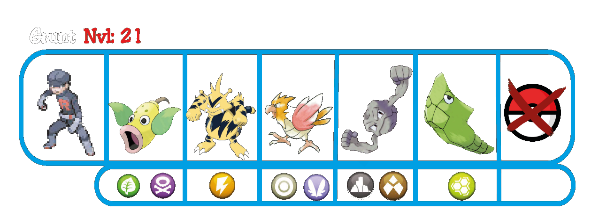
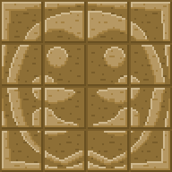
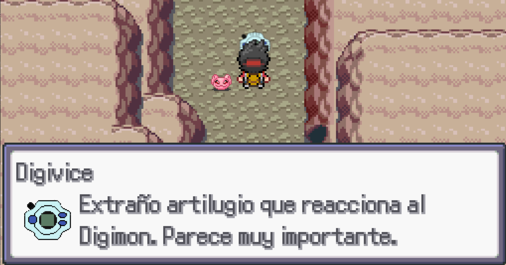

Ruta 2
Nada más entrar en la ruta te encontrarás con una discusión entre un miembro del Team Rocket y un pequeño calvo que se llama
"Krillin"
Krillin te pedirá ayuda y combatirás contra el miembro del Team Rocket y después de derrotarlo, tendrás una jugosa recompensa.

Después de derrotar a Grunt, Krillin te lo agradecerá entregándote una bolsa de Semillas Senzu, puedes usarlas para recuperar la vitalidad de tu equipo y se recarga en los Centro Pokemoitos.
Siguiendo hacia el Este encontraremos otros entrenadores y como siempre, recuerda fijarte en los cofres y objetos ocultos.
En el final de la ruta encontrarás una pequeña cueva con un científico dentro, te contará que lleva 10 años estudiando la cueva intentando abrir un supuesto camino oculto, que se abriría al completar el puzzle de la siguiente manera.

Al completar el rompecabezas ocurrirán dos cosas importantes, del rompecabezas saldrá un extraño aparato que deberías llevar al Instituto Científico para que te ayuden a descubrir su utilidad, pero será mejor llevarlo una vez hayas derrotado al líder de la siguiente ciudad.
Si después hablas con el científico, estará indignado y querrá luchar contigo, si le ganas, además de una buena cantidad de dinero, te dará también la Carta de Sasuke.
Una vez derrotado, ya podrás pasar por el camino que abrirste al resolver el puzzle. Los escombros que ocultaban el camino habrán desaparecido y se podrá ver un objeto clave, el Digivice.

Al recoger el Digivice, Koromon volverá a digievolucionar, convirtiéndose en Agumon. Te explicará que el dispositivo solo aparece ante los elegidos y que tú eres quien deberá salvar el Mundo Digital.
Te dirá que desde hace mucho tiempo alguien ataca su mundo desde el tuyo y que los Ángeles, unos Digimon divinos que mantienen el orden en el Mundo Digital, le enviaron para buscar y acabar con el culpable.
Después de la explicación podrás salir de la cueva para dirigirte al nuevo destino, Ciudad Batalla.